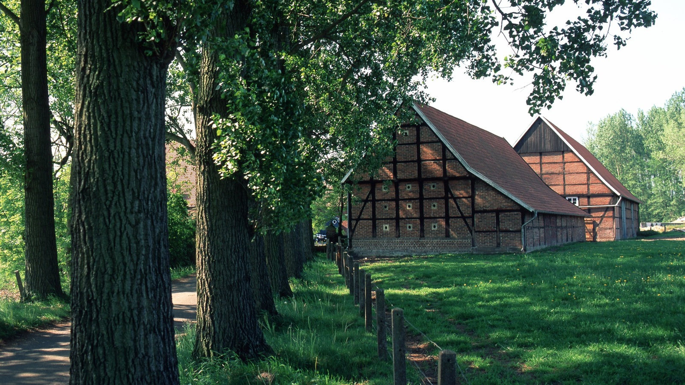

Willkommen im Dorfquartier


Und das kostet unsere Ferienwohnung
- 70€ für 1 Person
- 80€ für 2 Personen
- 90€ für 3 Personen
- 100€ für 4 Personen
- weitere Personen auf Anfrage
- Kinder von 0 - 3 Jahren zahlen nichts!
Über das Münsterland & Rheine!

Entdecken Sie die Schönheit des Münsterlands und tauchen Sie ein in die faszinierende Atmosphäre der Stadt Rheine! Inmitten malerischer Landschaften und historischer Kulissen bietet das Münsterland ein unvergleichliches Reiseerlebnis. Rheine, als strahlendes Juwel dieser Region, vereint charmante Tradition mit modernem Flair.
Erkunden Sie die prächtige Innenstadt von Rheine, gesäumt von historischen Fachwerkhäusern und lebendigen Plätzen. Schlendern Sie entlang der Ems und genießen Sie die entspannte Atmosphäre am Wasser. Die Stadt lockt mit einer Vielzahl von Cafés, Restaurants und kleinen Boutiquen, die zum Verweilen und Entdecken einladen.
Das Münsterland begeistert nicht nur durch seine idyllischen Dörfer, sondern auch durch sein reiches kulturelles Erbe. Besuchen Sie das imposante Schloss Bentlage, ein Meisterwerk barocker Architektur, oder erkunden Sie das einzigartige Kloster Gravenhorst mit seinen geschichtsträchtigen Gemäuern.
Für Naturliebhaber bietet das Münsterland eine Vielzahl von Rad- und Wanderwegen, die durch grüne Wiesen, Wälder und entlang romantischer Flussufer führen. Der Naturpark Moorhütte lädt zu erholsamen Stunden inmitten unberührter Natur ein.
Erleben Sie die herzliche Gastfreundschaft des Münsterlands und lassen Sie sich von Rheine verzaubern – eine Stadt, in der Geschichte auf Moderne trifft und Tradition auf Innovation. Ihr unvergessliches Abenteuer im Münsterland wartet darauf, von Ihnen entdeckt zu werden!